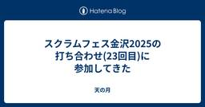
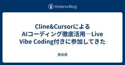
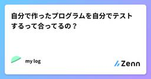
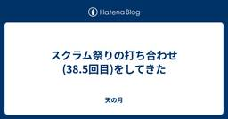
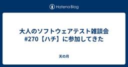
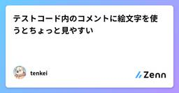
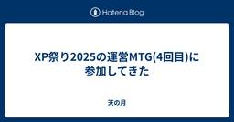
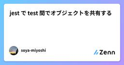
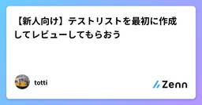
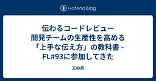

直近1週間の更新
5/25 (日)
5/24 (土)

スクラムフェス金沢2025の打ち合わせ(23回目)に参加してきた  天の月
天の月
aki-m.hatenadiary.com スクラムフェス金沢2025に向けた準備をしてきたので、会の様子を書いていこうと思います。 Keynoteの状況共有 WSのセッション調整 キャッシュ・フロー更新 ネットワーキング ノベルティ タスクの棚卸し Keynoteの状況共有 依頼いただいていた事項が完了して、事前に打ち合わせすることもできそうだという話の共有がありました。(意外と日がないので運営MTGが始まる前に動いてくれて話が共有されました) WSのセッション調整 WSの枠を伸ばしたいという要望がWS実施者からあったので、その要望を反映させるためにどういう案があるか？という話をしていきまし…
10時間前
5/23 (金)

Cline&CursorによるAIコーディング徹底活用―Live Vibe Coding付きに参加してきた 天の月
Cline&CursorによるAIコーディング徹底活用―Live Vibe Coding付き - connpass こちらのイベントに参加してきたので、会の様子と感想を書いていこうと思います。(冒頭の解説とライブコーディング部分のみ視聴しました) 会の概要 会の様子 AIツールの使い分け Roo Codeのデモ&解説 会全体を通した感想 会の概要 以下、イベントページから共有です。 Cursor・Clineなどのソフトウェア開発支援のAIツールの進化は目覚ましく、開発者の生産性に大きく影響を与えています。 一方、進化が早すぎるがゆえにあまり使いこなせていない、使いこなせている自信がないという方…
1日前

自分で作ったプログラムを自分でテストするって合ってるの？  Zennの「Test」のフィード
Zennの「Test」のフィード
自分で作ったプログラムを自分でテストすることは、ソフトウェア開発の現場でも一般的であり、むしろ推奨されるプロセスです。主な理由は以下の通りです：単体テストは開発者自身が行うべきプログラムのテストには「単体テスト」「結合テスト」「総合テスト」などがありますが、このうち単体テスト（自分が書いたコードが仕様通りに動くかの確認）は、開発者自身が行うのが基本です。自分の実装の正しさを保証できる自分でテストすることで、実装が仕様通りに動作しているかを確認でき、バグやミスを早期に発見できます。テストコードの自動化で品質向上・効率化テストコードを書くことで、動作確認の自動化や将...
2日前

ソフトウェアテストでよくある10の問題を回避する Ranorex Blog - UIテスト自動化ツール Ranorex
DevOpsチームのスキルがどれだけ優れていても、ソフトウェア開発では必ずと言っていいほど競合やエラーが発生します。機能、機能性、統合によって1つの問題が解決される一方で、別の問題が生じることもあります。もっとも熟練した […]The post ソフトウェアテストでよくある10の問題を回避する first appeared on UIテスト自動化ツール Ranorex.
2日前
5/22 (木)

スクラム祭りの打ち合わせ(38.5回目)をしてきた 天の月
aki-m.hatenadiary.com こちらの打ち合わせ(番外編)をしてきたので、会の様子と感想を書いていこうと思います。 Keynote カンファレンス設計 オンラインの盛り上げ 忘れるスキル OST Keynote Keynoteとしてどういうセッションを求めたいのか？という話をしていきました。傾向とパターンを掴むために、スクラム祭りでは過去にあった講演であのKeynoteをして欲しいという話や、逆にあのKeynoteは(普通のセッションとしては全然いいんだけど)Keynoteとしてはして欲しくないという話をしました。 軸として、場を盛り上げてカンファレンスのこの後の体験に対してワク…
2日前
Playwright で Clerk をテストするガイド【Next.js】 Zennの「Test」のフィード
はじめに先日、Next.js の勉強会で、Clerk による認証サービスの活用を取り上げました 🔐認証は、Web アプリケーション開発において、特に重要な要素の一つでありながら、テストが複雑な部分でもあります。とはいえ、複数のページにまたがる認証フローは、手動テストだけでは不十分になりがちです。今回は、Clerk の認証機能を Playwright でテストする方法について調査したので、基礎的な内容をまとめました！時間の節約になれば、嬉しいです 🙌 Clerk とは？https://zenn.dev/b13o/articles/tutorial-clerkもし、C...
2日前

2025年最新！初心者QAエンジニアが選ぶ自動化テストツール10選 Zennの「QA」のフィード
はじめにこんにちは！kaitoです。正直、テストって最初は「ひたすらポチポチする作業でしょ？」って思ってたんですよ。でも、プロジェクトが進むにつれて、手動テストの限界を痛感しまして...。特に、ちょっとコードを修正するたびに、何十、何百ものテストケースを全部手で確認するなんて、もう無理！時間もかかるし、ミスも出るし、何より心が折れそうになるんです（笑）。そんな時に出会ったのが、「自動化テストツール」でした。最初は「難しそう...」ってビビってたんですけど、実際に使ってみたら、これがもう革命的で！一度設定すれば、あとはツールが勝手にテストしてくれるんですから。おかげで、テストにか...
3日前
2025年最新！初心者QAエンジニアが選ぶ自動化テストツール10選 Zennの「Test」のフィード
はじめにこんにちは！kaitoです。正直、テストって最初は「ひたすらポチポチする作業でしょ？」って思ってたんですよ。でも、プロジェクトが進むにつれて、手動テストの限界を痛感しまして...。特に、ちょっとコードを修正するたびに、何十、何百ものテストケースを全部手で確認するなんて、もう無理！時間もかかるし、ミスも出るし、何より心が折れそうになるんです（笑）。そんな時に出会ったのが、「自動化テストツール」でした。最初は「難しそう...」ってビビってたんですけど、実際に使ってみたら、これがもう革命的で！一度設定すれば、あとはツールが勝手にテストしてくれるんですから。おかげで、テストにか...
3日前
5/21 (水)

大人のソフトウェアテスト雑談会 #270【ハチ】に参加してきた 天の月
ost-zatu.connpass.com 今週もテストの街葛飾に行ってきたので、会の様子と感想を書いていこうと思います。 ビブリオバトル スクラムフェス ファシリテーション本 鎌倉 ファシリテーター ビブリオバトル XP祭りの名物にビブリオバトルがありますが、スクラム祭りが同時開催ならスクラム祭りでもビブリオバトルをやって、頂上決戦を最後にやるみたいなコンテンツやったら面白そうだという話が出ていました。 ちなみに、XP祭りにおけるビブリオバトルのコンテンツは、バトルの応募はされないんだけれども視聴者はたくさんいるコンテンツになっているそうです。 スクラムフェス スクラムフェスが毎月ありますが…
3日前
5/20 (火)

モデルは磨く。レビューは学び合い。 Zennの「QA」のフィード
モデルをレビューするということレビューの場面では、つい細部に目を凝らしてしまうことがあります。テストケースであれコードであれ、「あれも、これも」とパターンや分岐を一つずつ確認していくうちに、気づけばレビュワー自身が設計をやり直しているような状態に陥る──これは多くの人にとって馴染みのある経験ではないでしょうか。私自身、テストケースや探索的テストのチャーターをレビューする際、意図せず細部に立ち入りすぎてしまったことが何度もあります。その結果、レビューに非常に時間がかかるだけでなく、深いドメイン知識や仕様の理解が求められるため、他チームや新人が入り込みづらくなるという課題も感じてい...
5日前
モデルは磨く。レビューは学び合い。 Zennの「Test」のフィード
モデルをレビューするということレビューの場面では、つい細部に目を凝らしてしまうことがあります。テストケースであれコードであれ、「あれも、これも」とパターンや分岐を一つずつ確認していくうちに、気づけばレビュワー自身が設計をやり直しているような状態に陥る──これは多くの人にとって馴染みのある経験ではないでしょうか。私自身、テストケースや探索的テストのチャーターをレビューする際、意図せず細部に立ち入りすぎてしまったことが何度もあります。その結果、レビューに非常に時間がかかるだけでなく、深いドメイン知識や仕様の理解が求められるため、他チームや新人が入り込みづらくなるという課題も感じてい...
5日前
Selenium/Appium Conf 2025 参加記  AIテスト自動化プラットフォーム「MagicPod」公式note
AIテスト自動化プラットフォーム「MagicPod」公式note
みなさんこんにちは。MagicPodエンジニアリングマネージャーのわきざかです。3月末にバレンシアで行われたSelenium/Appium Conference 2025に行ってきました。今までオンラインで開催されていたAppium Conferenceは何度か観ているのですが、オフライン開催というのはかなり久しぶりでした(Appium Confは2019年以来、Selenium Confは2023年)。私個人は現地入りするのは東京のSelenium Conference 2019以来です。JaSST'25 Tokyoと日程が奇跡的なモロ被りだったからか、日本人は皆無でした。プロポーザルを出してみましたが、応募が200以上あったらしく、惜しくも落ちました。その代わり、pre-webinarシリーズとして発表の機会を頂けることになり、頑張ったものはこちら(英語)にあります。続きをみる
5日前

テストコード内のコメントに絵文字を使うとちょっと見やすい✅️ Zennの「Test」のフィード
小ネタです。ちょっと複雑なテストの挙動を説明するために、コメントをつけることがあると思います。そのコメント内に絵文字をつけるとちょっと見やすい、という話です。こちらが絵文字なし。import { UserService } from 'path/to/service'import { createMockUser } from 'path/to/testUtils'describe("UserService", () => { it("getSomeone", () => { // 論理削除されているので無視される crea...
5日前
スクラム祭りの打ち合わせ(38回目)をしてきた 天の月
aki-m.hatenadiary.com こちらの打ち合わせをしてきたので、会の様子と感想を書いていこうと思います。 キャッシュ・フロー更新 メール返信 浅草地域トラックの追加 地域トラックの確認 趣意書のupdate Confengineのupdate キャッシュ・フロー更新 先週に引き続き、ありがたいことにスポンサーが増えていたのでキャッシュ・フローを更新しました。 Goldスポンサーということもありだいぶ黒字化したので、感謝しかないです。 メール返信 スポンサーの方からメールをいただけたので、それに対してお礼の返信をしました。 浅草地域トラックの追加 地域トラックがすでに多数ある状況で…
5日前
5/19 (月)

XP祭り2025の運営MTG(4回目)に参加してきた 天の月
XP祭りの運営MTG(4回目)に参加してきたので、会の様子を書いていこうと思います。 Confengineのアップデート 次回日程決め Confengineのアップデート confengine.com スクラム祭りでConfengineはアップデートしたのですが、まだXP祭りの運営でこういうところをアップデートしたいみたいなのは話すことができていなかったので、そこのアップデートをどうしましょうか？という話をしていきました。 具体的には以下を直していきました。 XP祭りのHPに記載されているConfengineのリンクを、スクラム祭りのConfengineのリンクに修正しました XP祭りに登壇し…
5日前

Webアプリの期待結果をHTTPレスポンスステータスコードで考える Zennの「QA」のフィード
テストケースの分類というと「正常系」「準正常系」「異常系」といったものがあると思いますが、私は細かい機能のテストにおいてはこれらの言葉はあまり使わずにHTTPのレスポンスステータスコードで結果を分類してテストケースを考えることが多いです。利点としては、HTTPレスポンスステータスコードは定義がはっきりしており 「何をもって"正常系"とするか？」といった解釈の食い違いが発生しないことが挙げられます。 有名どころのHTTPレスポンスステータスコードご存知の方も多いとは思いますが、主にWebアプリケーションを開発する上で比較的登場頻度の高いHTTPレスポンスステータスコードを挙げます。...
5日前
Webアプリの期待結果をHTTPレスポンスステータスコードで考える Zennの「Test」のフィード
テストケースの分類というと「正常系」「準正常系」「異常系」といったものがあると思いますが、私は細かい機能のテストにおいてはこれらの言葉はあまり使わずにHTTPのレスポンスステータスコードで結果を分類してテストケースを考えることが多いです。利点としては、HTTPレスポンスステータスコードは定義がはっきりしており 「何をもって"正常系"とするか？」といった解釈の食い違いが発生しないことが挙げられます。 有名どころのHTTPレスポンスステータスコードご存知の方も多いとは思いますが、主にWebアプリケーションを開発する上で比較的登場頻度の高いHTTPレスポンスステータスコードを挙げます。...
5日前

jest で test 間でオブジェクトを共有する Zennの「Test」のフィード
jest で global-setup をいい感じに使って backend にアクセスするための client を複数の .test ファイルで共有するjestで、テストのファイルを複数に分割してシナリオを記述したい。その際、beforeAll() などで全てのファイルで同じようなオブジェクト（例えば、ネットワークリクエストを行うクライアントなど）初期化をしている。そんな経験はないでしょうか。私は以下の方法によってそれを解決しました。まず、テストが子ワーカープロセスを生成して並列実行されないようにします。 "scripts": { "test:in-b...
6日前
ISTQB® Test Analyst v4.0 リリースされました 〜 Voicy 連動記事 （おまけ付き） 1 まこっちゃん
1 まこっちゃん
ISTQB®テストアナリストシラバスVer.4.0の主な変更点について本投稿は、下記 Voicyの放送を文字起こししたものを記事化したものです。最後に、おまけとして、version1(2007年版シラバス）から最新版までカバーされていたテスト技法をまとめたものを追記してあります。続きをみる
6日前

【新人向け】テストリストを最初に作成してレビューしてもらおう Zennの「Test」のフィード
私は実務歴約1年の新人エンジニアです．1年ほど経つと，規模の大きい開発タスクを任されるようになってくるかと思います．本記事では，中規模以上の開発タスクを進めていく中で，「最初にテストリストの作成とレビューをしてもらったら開発がスムーズに進んだ」という体験談をまとめました． 対象読者実務経験1年未満〜3年程度開発の手戻りを防ぎたい相談する際のコミュニケーションコストを削減したい 最初にテストリストの作成とレビューをする 設定説明を簡単にするため，ECサイトの機能全般の開発を任されたと仮定しましょう．主な機能は以下とします．商品一覧機能商品追加機能商品編...
6日前
5/18 (日)

伝わるコードレビュー 開発チームの生産性を高める「上手な伝え方」の教科書 - FL#93に参加してきた 1 天の月
伝わるコードレビュー 開発チームの生産性を高める「上手な伝え方」の教科書 - FL#93 - connpass こちらのイベントに参加してきたので、会の様子と感想を書いていこうと思います。 会の概要 会の様子 講演 本を書いたきっかけ 本を書く際に気をつけたこと 印象的だったこと 本書に込めた想い レビュアーに伝わるPRの準備 Q&Aパネルトーク レビューコメントで必ず修正してほしい、参考情報、みたいなレベル感をどのように調整しているか？ レビューのタイミングで基本設計やアーキテクチャの問題を話す際に苦慮しているのだが伝え方で改善できる部分はあるか？ レビュアーとレビュイーで意見が分かれた場合…
6日前